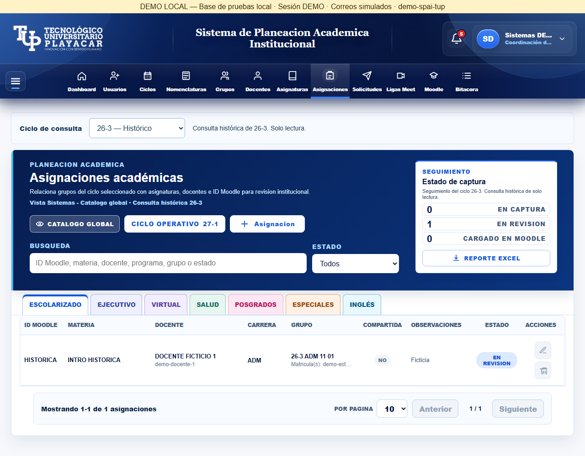
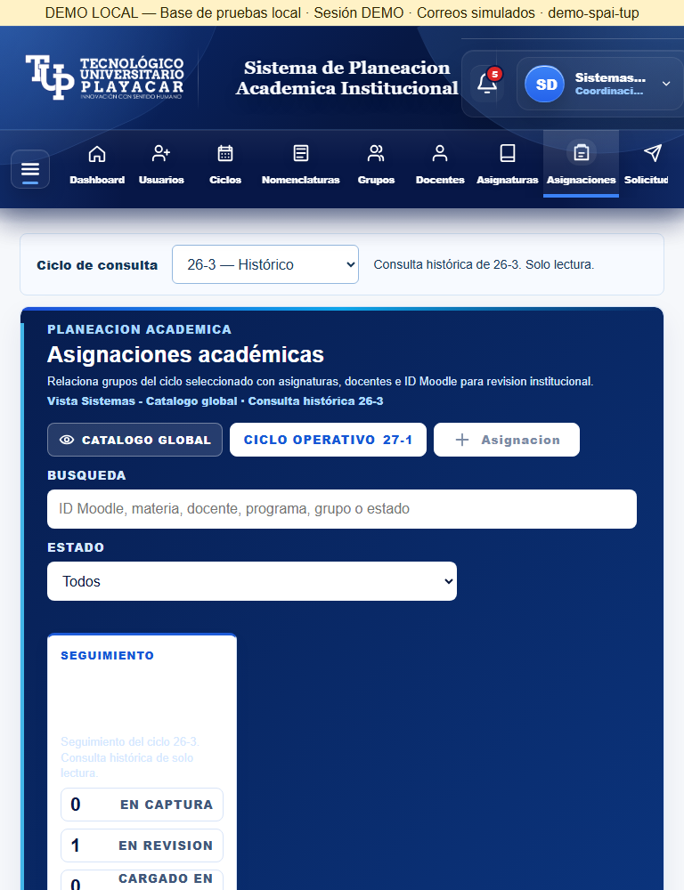
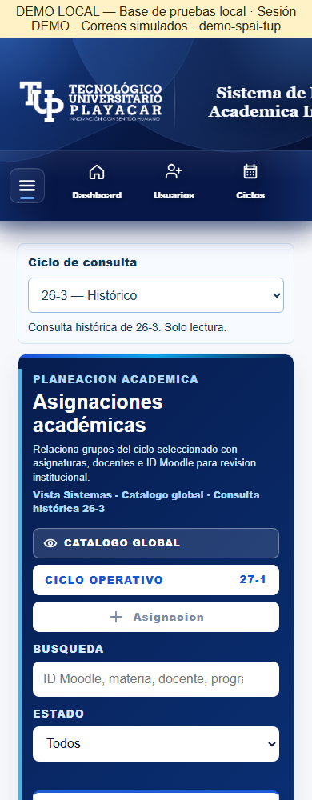
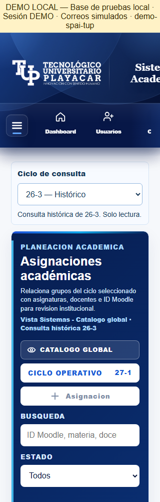
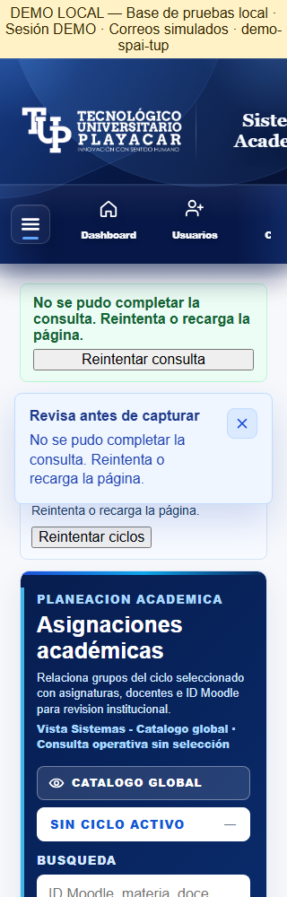
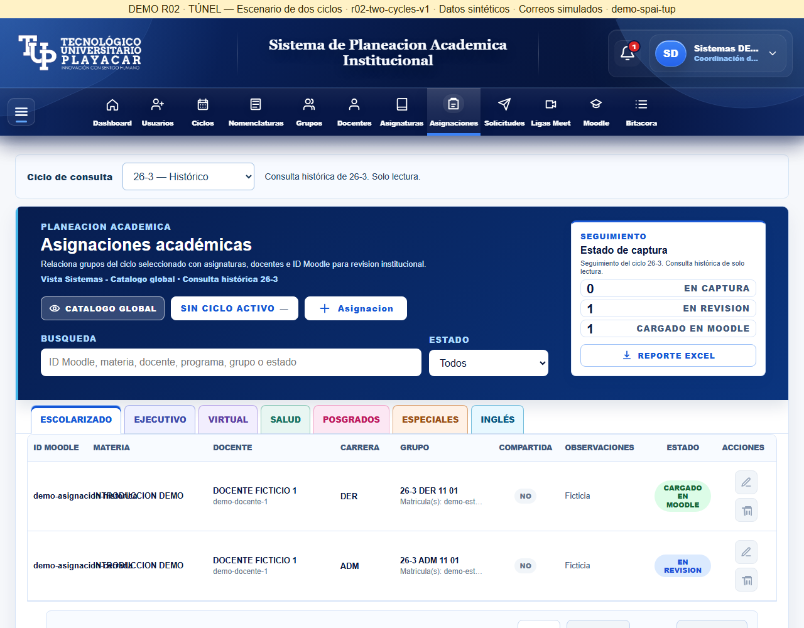

23 de octubre de 2026. Entorno ficticio aislado 4204/28080. Capturas inspeccionadas por Codex; aceptación visual del propietario pendiente. El selector y la vista consultada son independientes del ciclo operativo.
Informe y archivos modificados · 7 comprobaciones de interfaz · Túnel





